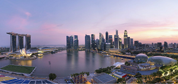
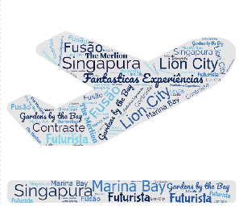

Singapura

Introdução
Localização
Multimedia
Informação
Introdução
Pequena em tamanho, a "Lion City" oferece grandes encantos.
Singapura!
Este website apresenta-lhe esta pequena ilha e cidade-estado que é um caso de fusões e contrastes repleto de maravilhas à espera de serem exploradas.
- Localização - Singapura, é uma cidade-Estado insular localizada na ponta sul da Península Malaia, no Sudeste Asiático.
- Multimedia - Deslumbre-se com Singapura
- Informação - Parques tranquilos ao lado de arranha-céus futuristas e centros comerciais luxuosos. Um ambiente de comida de rua dinâmico e restaurantes de renome mundial oferecem inúmeras formas de experimentar a mistura gastronómica de Singapura. Singapura será a prova de que, por vezes, as melhores surpresas não precisam de grandes embrulhos.
